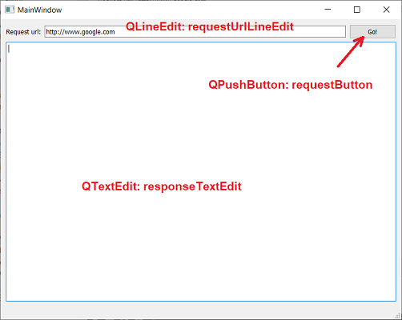
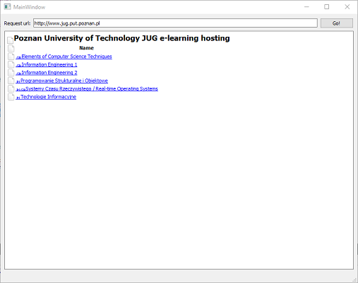
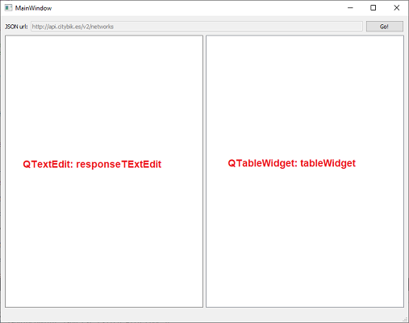

Lab 15 - Qt - wybrane elementy
Lab 15 - Qt - wybrane elementy
Użyteczne moduły w Qt Framework
Cechą Qt Freamwork jest gotowa implementacja szeregu mechanizmów i udogodnień, które ułatwiają budowanie aplikacji multi-platformowych (Linux, OS X, Windows). Pisząc dla specyficznego sytemu operacyjnego często zachodzi konieczność wykorzystania bibliotek i rozwiązań dedykowanych dla konkretnego systemu operacyjnego. Qt Framwork w wielu przypadkach pozwala zdjąć z programisty konieczność implementacji oddzielnego kodu dla różnych środowisk. Do ciekawych elementów należą między innymi:
- QtNetwork - API do obsługi funkcji sieciowych, m.in. TCP/IP i zapytań HTTP,
- QtMultimedia - implementuje obsługę multimediów, plików audio-video, kamery itd.,
- QtPrintSupport - obsługa kolejek wydruku/drukowania,
- QSerialPort - implementacja obsługi portu szeregowego,
- QSql - pozwala na wykonywanie zapytań do baz danych typu SQL,
- i wiele, wiele innych...
Wykonanie zapytania HTTP - przeglądarka internetowa
HTTP (ang. Hypertext Transfer Protocol) to protokół wykorzystywany przez przeglądarki internetowe do przesyłania treści dokumentów w sieci WWW. Qt pozwala na wykonanie zapytania HTTP i odczytanie odpowiedzi wykorzystując do tego mechanizmy zawarte w module QtNetwork.
Aby skorzystać w aplikacji Qt z modułu QtNetwork należy wyedytować plik .pro i do listy
modułów dodać network:
QT += core gui networkNastępnie należy załączyć nagłówki, które pozwolą na wykorzystanie obiektów wykonujących i odbierających zapytanie HTTP:
#include <QNetworkAccessManager>
#include <QNetworkReply>🛠🔥 Zadanie 🛠🔥
- Utwórz nowy projekt Qt Widgets Application,
- Do pliku
.prododaj modułnetwork, - Załącz w pliku
mainwindow.hnagłówkiQNetworkAccessManagerorazQNetworkReply. - Wyedytuj w Qt Designer główne okno programu. Projektowana aplikacja pozwalać będzie na wykonanie zapytania HTTP na podany adres URL i wyświetlenie odpowiedzi zinterpretowanej jako HTML, będzie to bardzo uproszczona przeglądarka internetowa. Przykład wyglądu głównego okna programu:

Do wykonania zapytania konieczne jest dodanie do klasy okna głównego 2 obiektów:
private:
QNetworkAccessManager manager; // obiekt wysyłający i odbierający zapytanie
QNetworkRequest request; //obiekt reprezentujący treść zapytaniaKonieczne jest także utworzenie slotu, który pozwoli na przechwycenie odpowiedzi (QNetworkReply):
private slots:
void requestFinished(QNetworkReply *reply);W celu przechwycenia odpowiedzi należy połączyć sygnał QNetworkAccessManager::finished z slotem
MainWindow::requestFinished:
connect(&manager, &QNetworkAccessManager::finished, this, &MainWindow::requestFinished);Samo wywołanie zapytania HTTP może wyglądać następująco:
request.setUrl(QUrl(ui->requestUrlLineEdit->text()));
manager.get(request);🛠🔥 Zadanie 🛠🔥
- Dodaj deklarację i pustą na ten moment implementację slotu
void requestFinished(QNetworkReply *reply). - W konstruktorze
MainWindowwykonaj połączenie sygnałuQNetworkAccessManager::finishedz slotemMainWindow::requestFinished. - Dodaj do programu slot, który pozwoli na obsłużenie sygnału
QPushButton::clickedz przyciskurequestButton. Wewnątrz slotu umieść wywołanie zapytania HTTP.
Na ten moment program potrafi wykonać zapytanie, ostatnim brakującym elementem jest wyświetlenie treści
odpowiedzi w obiekcie responseTextEdit. Obsługę odpowiedzi umieszczamy w slocie obsługującym sygnał
QNetworkAccessManager::finished. Widget QTextEdit posiada możliwość bezpośredniej,
uproszczonej, interpretacji kodu HTML, za pomocą metody setHtml():
if(!reply->error())
{
QByteArray replyText = reply->readAll();
ui->responseTextEdit->setHtml(replyText);
}🛠🔥 Zadanie 🛠🔥
- Wewnątrz slotu
MainWindow::requestFinishedumieść obsługę odpowiedzi, wraz z wyświetlaniem interpretowanego HTML. - Przykładowy wynik działania dla zapytania dla url: http://www.jug.put.poznan.pl:

Obsługa JSON
JSON (ang. JavaScript Object Notation) to popularny tekstowy format wymiany danych bazujący na języku JavaScript. Format JSON jest słownikowy, każdemu wpisowy (o dowolnej formie) towarzyszy klucz, który identyfikuje dane pole i pozwala na dostęp do danych. Przykładowy JSON:
{
"class_name": "Techniki Informacyjne",
"number_of_students": 3,
"topics": ["LaTeX", "Matlab", "Python"],
"student_grades": {
"Marek": 2.0,
"Zofia": 5.0,
"Jan": 4.5
}
}JSON może być dostarczony jako plik tekstowy lub bardzo często jest formą w jakiej serwer zwraca odpowiedź na zapytanie HTTP - taką formę zazwyczaj określa się jako REST API (ang. Representational State Transfer Application Programming Interface). Qt posiada wbudowaną obsługę formatu JSON, co pozwala na łatwe budowanie aplikacji wykorzystujących REST API. Do tego celu wykorzystać można poznany wcześniej QtNetwork oraz biblioteki reprezentujące obiekty JSON. W celu skorzystania z interpretera JSON konieczne jest załączenie nagłówków:
#include <QJsonDocument>
#include <QJsonObject>
#include <QJsonArray>🛠🔥 Zadanie 🛠🔥
Dany jest REST API zwracający informacje o wypożyczalniach publicznych rowerów na całym świecie. API dostępne jest pod adresem: http://api.citybik.es/v2/networks. Zadanie polegać będzie na modyfikacji wcześniejszego programu, w taki sposób aby wyświetlał w formie tabelarycznej dane o sieciach rowerów zawartych w odpowiedzi typu JSON.Otwórz URL w dowolnej przeglądarce internetowej, a także skorzystaj z programu wykonanego w wcześniejszej części zajęć. Postaraj się przeanalizować strukturę JSON odpowiedzi:
{
"networks": [
{
"company": ["ЗАО «СитиБайк»"],
"href": "/v2/networks/velobike-moscow",
"id": "velobike-moscow",
"location": {
"city": "Moscow",
"country": "RU",
"latitude": 55.75,
"longitude": 37.616667
},
"name": "Velobike"
},
{
"company": ["Gobike A/S"],
"href": "/v2/networks/bycyklen",
"id": "bycyklen",
"location": {
"city": "Copenhagen",
"country": "DK",
"latitude": 55.673582,
"longitude": 12.564984
},
"name": "Bycyklen"
},
....
]
}Do reprezentacji danych odczytanych z JSON w programie okienkowym można wykorzystać widget QTableWidget.
🛠🔥 Zadanie 🛠🔥
-
Wyedytuj okno wcześniej utworzonego programu:
- Do
requestUtlLineEditwwpisz na stałe adres zapytania http://api.citybik.es/v2/networks. Możesz także zmienić parametrenabledpola, tak aby nie było możliwe jego edytowanie. - Dodaj widget
QTableWidgetoobjectNamerównejtableWidget.

- Do
-
W konstruktorze
MainWindowwykonaj wstępne formatowanie tabeli. Ustaw liczbę kolumn na 3 i listę opisów nagłówka:
ui->tableWidget->setColumnCount(3);
ui->tableWidget->setHorizontalHeaderLabels(QStringList({"Name", "City", "Country"}));W Qt dokument/odpowiedź JSON reprezentowana jest przez obiekty typu QJsonDocument. Każdy wpis
słownikowy, to QJsonObject. Lista elementów może być reprezentowana przez QJsonArray.
🛠🔥 Zadanie 🛠🔥
W API http://api.citybik.es/v2/networks podstawowym wpisem jest słownik z
pojedynczym kluczem netowrks. Wpis networks zawiera listę słowników reprezentujących
poszczególne sieci rowerowe. Poniżej przedstawiono przykład przetwarzania odpowiedzi JSON z opisywanego API wraz z
procedurą wypełniania tabeli QTableWidget:
if(!reply->error())
{
QByteArray reply_text = reply->readAll();
ui->responseTextEdit->setHtml(reply_text);
QJsonParseError jerror;
QJsonDocument jdoc = QJsonDocument::fromJson(reply_text, &jerror);
if(jerror.error == QJsonParseError::NoError)
{
QJsonObject jmainobject = jdoc.object();
QJsonArray networks = jmainobject["networks"].toArray();
ui->tableWidget->clearContents();
ui->tableWidget->setRowCount(0);
for(auto item: networks)
{
QJsonObject network = item.toObject();
ui->tableWidget->insertRow(ui->tableWidget->rowCount());
QString name = network["name"].toString();
ui->tableWidget->setItem(ui->tableWidget->rowCount() - 1, 0, new QTableWidgetItem(name));
QJsonObject location = network["location"].toObject();
QString city = location["city"].toString();
ui->tableWidget->setItem(ui->tableWidget->rowCount() - 1, 1, new QTableWidgetItem(city));
QString country = location["country"].toString();
ui->tableWidget->setItem(ui->tableWidget->rowCount() - 1, 2, new QTableWidgetItem(country));
}
}
}- Umieść powyższą obsługę wewnątrz slotu
MainWindow::requestFinished. Przetestuj działanie programu. - Zmodyfikuj program tak aby poza informacjami nazwie, mieście i kraju każdej sieci rowerów wyświetlana była także informacja o: długości i szerokości geograficznej, a także firmach świadczących usługi (zwróć uwagę ze pole company jest listą, w danej miejscowości usługi może świadczyć więcej niż jedna firma).
Zadanie końcowe 🛠🔥
Odtwarzacz plików MP3
Wykorzystując Qt napisz prosty odtwarzacz plików audio. Program powinien:
- Odtwarzać pliki MP3,
- Umożliwiać wskazanie pliku za pomocą QFileDialog,
- Posiadać 3 przyciski: PLAY, PAUSE, STOP
- Posiadać pasek postępu prezentujący postęp odtwarzania pliku. Wykorzystaj QProgressBar.
Jako odtwarzacz plików wykorzystaj klasę QMediaPlayer. W
celu wykorzystania modułu w pliku .pro należy dodać multimedia:
QT += core gui multimediaoraz załączyć nagłówek:
#include <QMediaPlayer>W celu realizacji zadania zapoznaj się z następującymi slotami, sygnałami i metodami:
-
QMediaPlayer::setMedia() -
QMediaPlayer::setVolume() -
QMediaPlayer::play() -
QMediaPlayer::pause() -
QMediaPlayer::stop() -
QProgressBar::setValue()
Autorzy: Tomasz Mańkowski